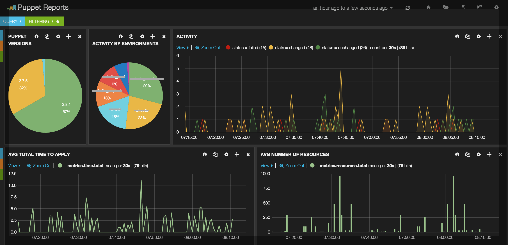

Инструменты для парсинга
Ручной и консольный парсинг
Для парсинга этим методами используются: браузер, различные расширения и программы.
Например программы с поддержкой OCR нужны для считывания текста с изображений.
Например программы с поддержкой OCR нужны для считывания текста с изображений.
Статический парсинг
Для него используют разные инструменты — программы, библиотеки и сервисы.
Библиотеки для python:
BeautifulSoup — библиотека для извлечения данных из HTML и XML, подходит для простых задач и небольших проектов. Позволяет создавать DOM-дерево элементов и извлекать данные.
Scrapy — фреймворк для парсинга данных из HTML-страниц, представляет собой набор автономных «пауков» (веб-краулеров) с заданными инструкциями. Поддерживает асинхронные запросы, обработку ошибок и интеграцию с прокси-сервисами.
Selectolax — быстрый парсер HTML-страниц, использует CSS-селекторы для извлечения информации из тегов.
Библиотеки для python:
BeautifulSoup — библиотека для извлечения данных из HTML и XML, подходит для простых задач и небольших проектов. Позволяет создавать DOM-дерево элементов и извлекать данные.
Scrapy — фреймворк для парсинга данных из HTML-страниц, представляет собой набор автономных «пауков» (веб-краулеров) с заданными инструкциями. Поддерживает асинхронные запросы, обработку ошибок и интеграцию с прокси-сервисами.
Selectolax — быстрый парсер HTML-страниц, использует CSS-селекторы для извлечения информации из тегов.
Динамический парсинг
Чаще всего используются рукописные скрипты в связке с браузером или онлайн сервисами.
Выбор инструмента зависит от языка программирования и поставленных задач.
Для python:
Selenium — библиотека для автоматизации веб-браузера, позволяет программно управлять браузером, эмулировать действия реального пользователя.
Playwright — универсальная библиотека headless-браузера для автоматизации веб-браузеров, поддерживает браузеры Chromium, WebKit и Firefox.
Для Node.js:
Puppeteer — инструмент от Google, предоставляет API для управления Chrome и Chromium через протокол DevTools.
Для Java:
HtmlUnit — «безголовый» браузер, позволяет взаимодействовать с веб-страницами без необходимости запускать реальный браузер.
Так же существуют онлайн сервисы:
Octoparse — Облачный сервис с визуальным конструктором: пользователь «обучает» систему, выбирая нужные элементы, а алгоритм генерирует код.
eScraper — Сервис ориентирован на электронную коммерцию.
ParseHub — Использует машинное обучение для автоматического распознавания шаблонов, включая динамически загружаемый контент.
XMLDATAFEED — Инструмент для парсинга любой информации, которую можно собрать законным способом. Особенность — отсутствие готовых решений, под каждый запрос команда разработчиков создаёт уникальный парсер для нужной задачи.

Выбор инструмента зависит от языка программирования и поставленных задач.
Для python:
Selenium — библиотека для автоматизации веб-браузера, позволяет программно управлять браузером, эмулировать действия реального пользователя.
Playwright — универсальная библиотека headless-браузера для автоматизации веб-браузеров, поддерживает браузеры Chromium, WebKit и Firefox.
Для Node.js:
Puppeteer — инструмент от Google, предоставляет API для управления Chrome и Chromium через протокол DevTools.
Для Java:
HtmlUnit — «безголовый» браузер, позволяет взаимодействовать с веб-страницами без необходимости запускать реальный браузер.
Так же существуют онлайн сервисы:
Octoparse — Облачный сервис с визуальным конструктором: пользователь «обучает» систему, выбирая нужные элементы, а алгоритм генерирует код.
eScraper — Сервис ориентирован на электронную коммерцию.
ParseHub — Использует машинное обучение для автоматического распознавания шаблонов, включая динамически загружаемый контент.
XMLDATAFEED — Инструмент для парсинга любой информации, которую можно собрать законным способом. Особенность — отсутствие готовых решений, под каждый запрос команда разработчиков создаёт уникальный парсер для нужной задачи.
Парсинг при помощи Api
Для реализации такого метода чаще всего используют API сайта и скрипт на python/C#. Скрипт чаще всего пишется с применением библиотек, которые упращают взамодействие с API.
Dakword/WBSeller — Библиотека для работы с Wildberries API, доступна на GitHub.
ozon-api — асинхронная библиотека для работы с API Ozon Seller.
Dakword/WBSeller — Библиотека для работы с Wildberries API, доступна на GitHub.
ozon-api — асинхронная библиотека для работы с API Ozon Seller.